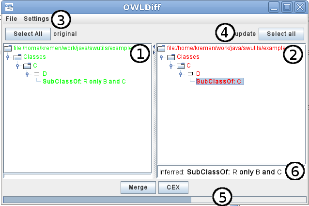
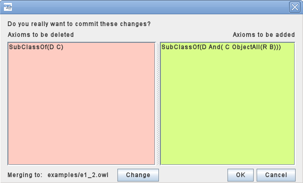
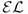
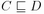
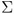
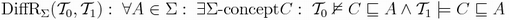
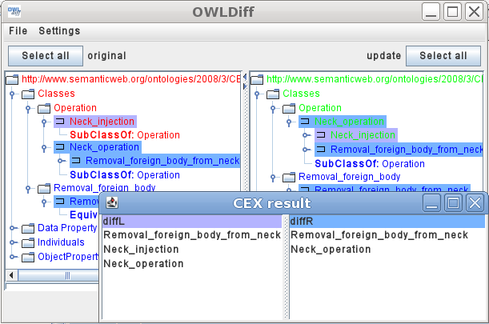

Contents
IntroductionInstallation - Standalone
Installation - NeOn Plugin
User Guide
Algorithms
Introduction
OWLdiff is a project for comparing and merging of two ongologies. It aims to help managing and updating ontologies, which are often modified by several sides, and merging of concurrent updates is necessary. Usually, as for case of textual source codes, a versioning system is used for similar purpose: when multiple people update the same file, one of them performs a merge, using a diff utility, which allows him to view the changes in the file, select the changes which are to be included in the result, merge the files, and commit the resulting file.
OWLdiff serves the same purpose for ontologies, as diff does for textual files. It takes two ontologies as
arguments; let us call them the original
and the update.
Then it uses the Pellet reasoner to check, if the two ontologies are semantically equivalent. If not, it shows the
differences graphically in two trees, one for each ontology. User can select
differing items in either tree, which is to be updated in the resulting merged ontology.
Installation - Standalone
How to setup the development environment
- Download and install Maven (http://maven.apache.org/).
NOTE: Ensure that You have internet connection for the initial setup and that you have set proxy (if applicable). There will be a significant network traffic when downloading all necessary libraries and plugins for Maven for the first time setup. - Run the 'install-local-files'. (On Windows machines, rename it to .bat first). This will add local dependencies to the Maven local repository.
- Go to the 'owldiff-core' directory and run 'mvn install'. This compiles and installs the OWLDiff core part - that is used by the other OWLDiff projects.
- Go back to the 'owldiff' dir and now You can generate project files for Your favorite development environment:
'mvn eclipse:eclipse' (For Neon Plugin you will need to perform this command also in the plugin directory to preserver the dependencies)
'mvn idea:idea'
For NetBeans there should be a direct support in the 6.5 version. For earlier versions try MevenIDE (http://mevenide.codehaus.org/) . - You can start Your IDE and start coding :-) :
- for developing standalone application you will need to open owldiff-core and owldiff-standalone projects in your favorite IDE
- for developing neon plugin you will need to open owldiff-core and owldiff-neon-plugin projects in Eclipse
- for developing protege plugin you will need to open owldiff-core and owldiff-protege-plugin projects in Eclipse
NOTE: For project lifecycle management You can use maven directly for command-line. The only exceptions are
- the owldiff-neon-plugin project, as it requires Eclipse libraries (not attached through Maven, meanwhile)
- the owldiff project as it has the owldiff-neon-plugin as its module.
NOTE: Please read all readme.txt for nested projects for other configuration setups.
The Maven setup is just an experiment - its benefits are not clear by now. Anyway the directory 'lib-old' is NOT SUPPOSED to be used during the development stage. It is left in the repository as a backup - all required libraries should be loaded through Maven as described above.
Installation - NeOn Plugin
User Guide
Introduction
This user guide describes the usage of the main features of OWLdiff.
startup
The OWLDiff is started with two parameters, which are locations of ontologies to be compared.
java -jar swutils.jar [ontology-old.owl] [ontology-update.owl]
After the program starts, the diff algorithm is performed and window, showing the differences, is opened.

- Left pane - Overview of axioms of the old ontology.
- Right pane - Overview of axioms of the new ontology.
- Main menu - here you can adjust type of view, switch off reasoner and select different ontologies
- Select all/Deselect All - allows you to select/deselect all axioms, which are different
- Merge - performs merge on loaded ontologies with respect to selected axioms to be deleted/removed CEX - Shows differences based on results of the CEX algorithm.
- Axiom properties - shows the role of each axioms
- Inferred - this axioms is not presented in the ontology, but can be inferred. The axioms, which were used for inferring are shown.
- Axiom is in both ontologies
- Axiom has no connection to other ontology
settings
In the settings, you can select the different representation of axioms or switch off Pellet reasoner.
- Show common axioms - If selected, all axioms from the ontology are shown(even the common axioms)
- Show class hierarchy - If selected, classes/properties are organised based on subclass axioms
- Use pellet classification - If selected, the Pellet reasoner is used for finding differential axioms. It leads to less(or equal) set of differential axioms, because some of the axioms can be inferred even if not presented in the ontology.
- Manchester syntax - axioms are shown in more human-readable Manchester syntax
- Description logic - classical description logic syntax more ...
selecting axioms
Axioms for merge can be selected by highlighting each axiom with double-click, or by clicking on select/deselect all
axioms button above each ontology view.
Selecting axioms in original and update ontology has different meaning:
- Original - Axioms selected here will be removed from the ontology(assuming they should be removed, because they are not contained in the update)
- Update - These axioms are to be added to the merged ontology
merge
By clicking the merge button, a window showing the operations to be performed is opened.

In the left pane, there are axioms to be deleted from the original ontology and in the right pane, there are axioms,
which will be added from update ontology.
By default, the merged ontology is saved to the location of the original ontology(assuming we performed update to
that one) and the original ontology is lost. By clicking the change button, the location of the
resulting ontology can be changed to merge into another file.
After clicking OK button, the new ontology is created from the common axioms and the axioms selected from the
update ontology and saved to the specified file.
After merging the ontology, new diff is performed on the selected files to show if there are any remaining
differences in the ontologies.
Algorithms
The system incorporates two algorithms described in following chapters to find differences between two ontologies. The first one is a simple way how to find missing, added or modified axioms, but cannot reveal complex dependencies. The other, CEX, is more complicated, can find deep impacts of modified axioms (differences that cannot be seen in class hierarchies), but supports only  description logics.
Basic Ontology Comparison
This algorithm compares only axioms. It generates 4 axiom lists, to represent a few types of ontology differences: origRest, updateRest, inferred, possiblyRemove. The process is divided into two steps.
The first step is the syntactic diff. The algoritm first adds all the axioms contained in the update
ontology
but not in the original
ontology into the updateRest list,
then the axioms contained in the original
ontology but not in the update
ontology into the origRest
list.
The other step is based upon entailments. It uses the lists origRest and updateRest from the
previous step. It takes all axioms from the updateRest list, and checks
if the axioms can be entailed from the original
ontology; if yes, it puts them into the
possiblyRemove list - list of axioms, that may be redundant in the update
ontology
(with respect to original
ontology).
Then it takes all axioms from the origRest list, and checks if the axioms can be entailed from the update
ontology; if yes, it puts them into the inferred list
- list of axioms, that are covered by the update
ontology, and thus are not lost when omitted.
CEX: Logical Diff
This is a more complicated algorithm, finding complex effects of axiom modifications, but only able to work on description logics. It is based on the paper: Konev, B., Walther, D., and Wolter, F.: The logical difference problem for description logic terminologies, online at http://www.csc.liv.ac.uk/~frank/publ/publ.html.
The description logics allows following constructs:
- Concept
- Axioms: concept inclusion , concept equality
- No concept name can occur on the left side of an axiom more than once
The algorithm uses a signature , which is an union of a set of concept and a set of roles.
The algorithm returns in polynomial time two sets of concepts:
- 
The two sets represent differences between two ontologies, even when the differences cannot be observed in class hierarchies. The algorithm uses various auxiliary sets, and is rather complicated; it is beyond scope of this document, for details please see the paper Kovev et al.
Following image shows how a sample output of CEX algorithm looks like. This is is an example used in the paper Kovev et al., giving the same results as in the paper.
